Jenson runs the same step we do: sense, turn, move, deposit, blur, fade. The look comes from how it is run and drawn. Four things we could test on our 1024 x 640 dish explain most of it: no one-walker-a-cell limit, settings that suit that, a brightness curve that keeps tube cores from saturating, and walkers that respawn at random. Two things are still not reproduced: the feathery fronts that grow into the haze, and the contagion events.
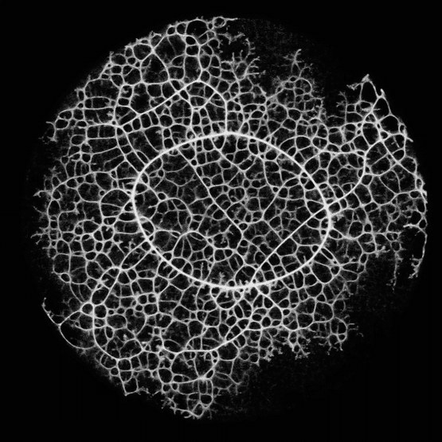
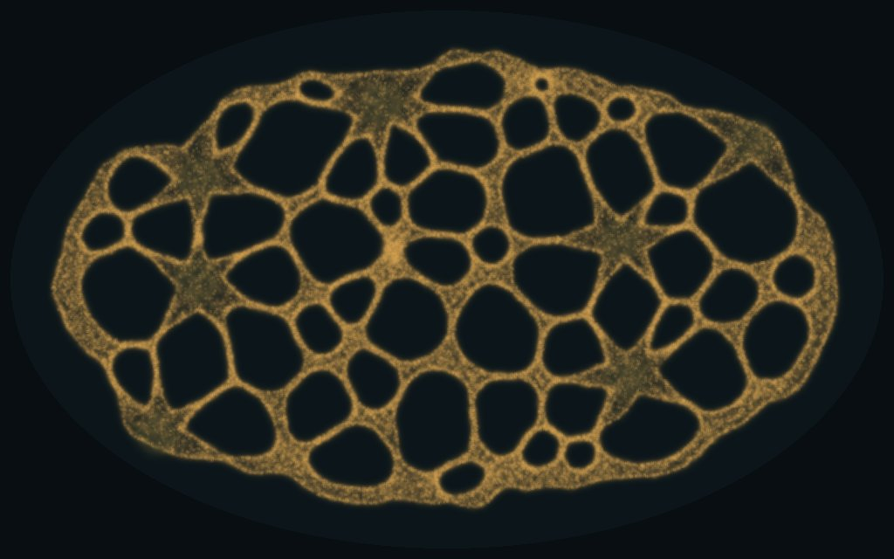
Width and haze on Jenson's frame are measured on the picture (brightness over 110 or 150 of 255 is tube; 20 to 80 is haze). Ours are the engine's own measures (seed 1). The same picture measure is used for every grey picture below, so those compare directly with Jenson's.
Each row is something visible in the clips, what ours does instead, the likely cause, and whether a test here backs it.
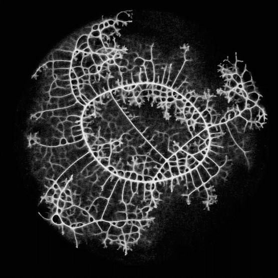
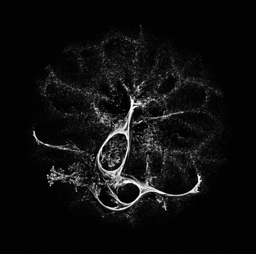
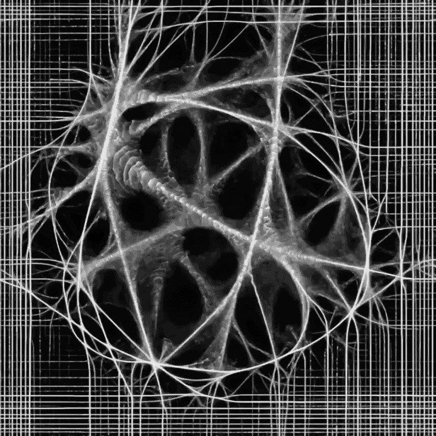
Left to right: network_2 half way (the fronts and the haze), explosion during the burst, and ef_9 (the web). From the owner's saved copies.
All on our big dish (1024 x 640, the chosen nose rule), spread start, seed 1 in the pictures. Food is off from row 1 on (one pile, no scent), because Jenson's clips have none. Loops are the engine's count; width and haze are the picture measure above.
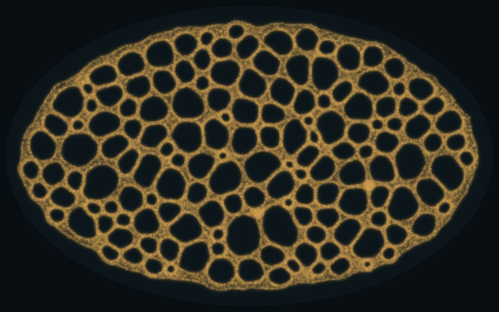
Fewer loops with the limit off on 8 of 8 seeds (sign test p = 0.008, survives the correction over 4). Without the limit, our settings fold the walkers into a few thick ropes within seconds. So Jenson's rule needs other settings.
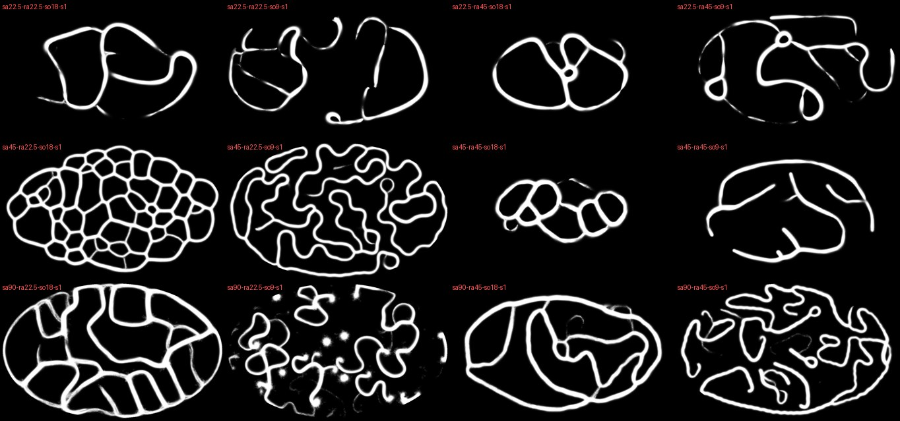
The best mesh came from sensor angle 45, turn 22.5 and sensors 18 cells out: straight-sided polygons. That arm is used from here on.
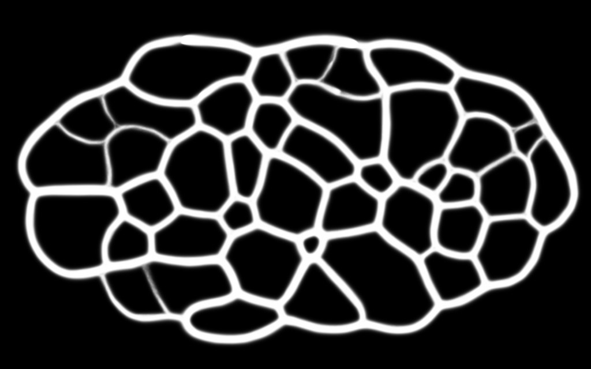
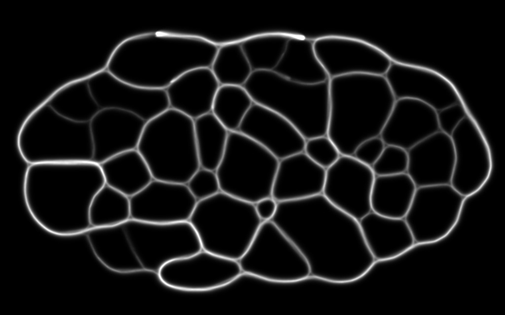
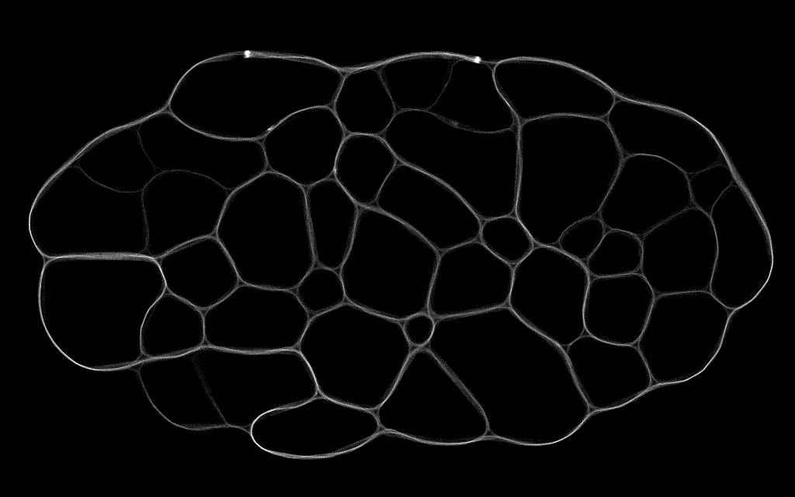
Same data, 42 loops in all three. The game's curve is nearly full at a trail of 15, so it paints the flanks as solid tube. These tubes peak near 100 to 200. The soft curve (trail over its 99.9th percentile, to the power 0.6) is Jenson's width range; drawing walker counts, as Bleuje's port of Jenson's later work does, is thinner still.
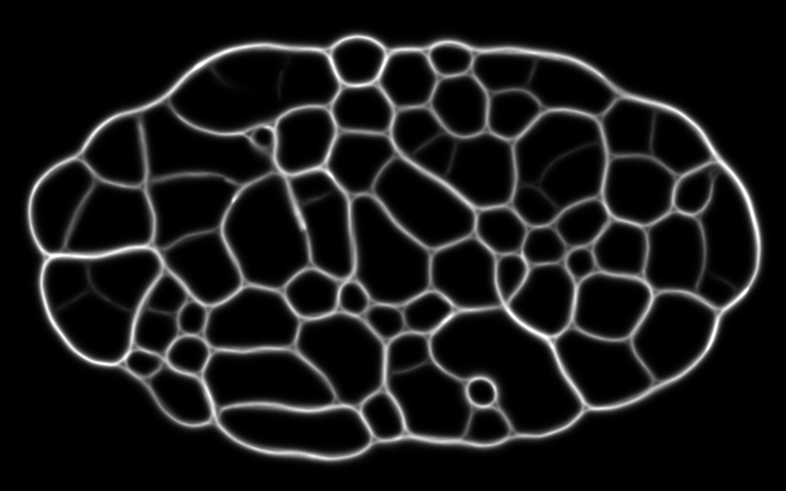
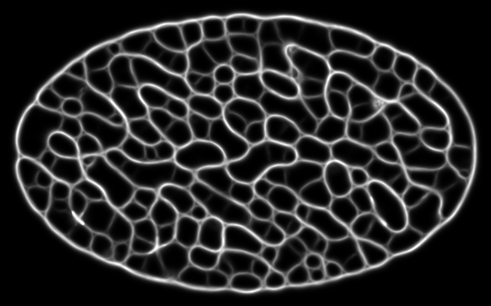
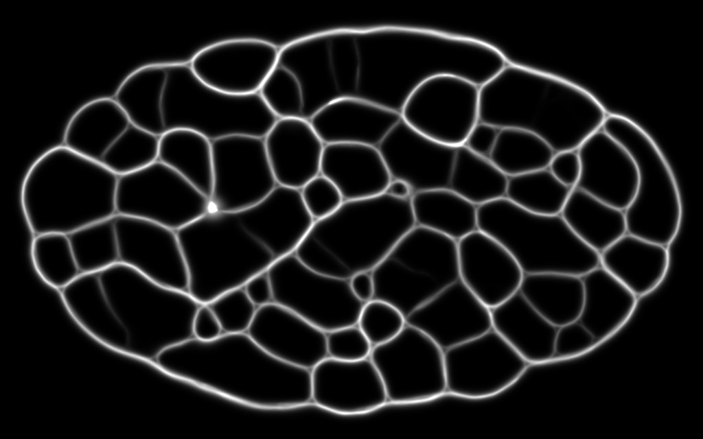
Density alone changes little. The turn rule only compares sensors, so more walkers mostly smooth the grain. Four times the walkers still made the mesh everywhere at once and still coarsened (171 loops at 1 s to 60 at 5 s).
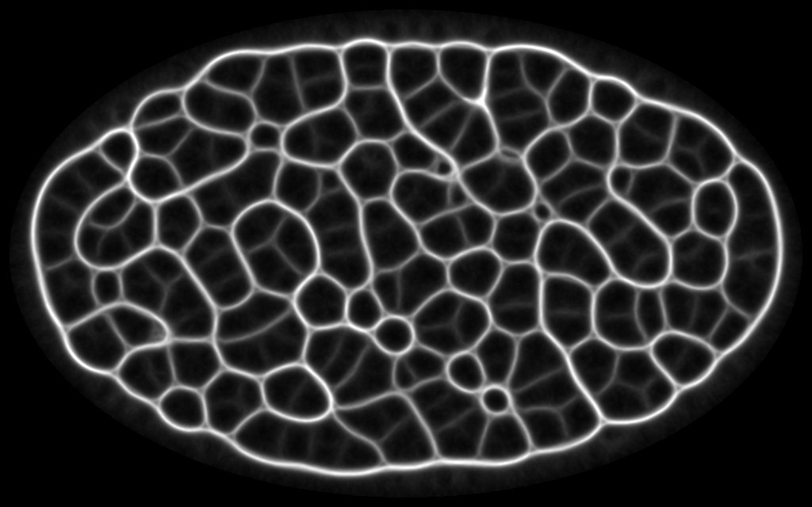
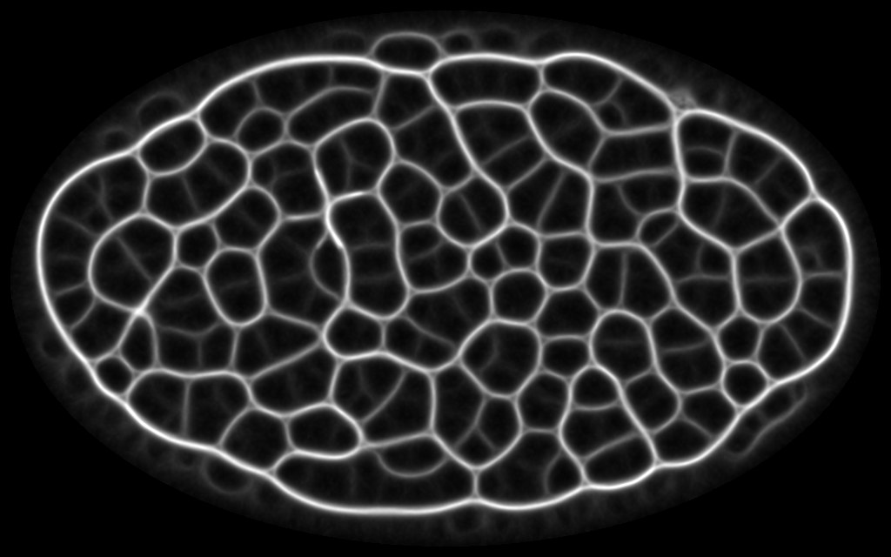
More loops with respawn on 8 of 8 seeds: 196 median (187 to 208) against 43.5 (38 to 52), sign test p = 0.008, survives the correction. The mesh stays fine and a haze of fresh walkers fills the gaps, as in Jenson's clips. By the engine's trail cut the tubes are wider (7.9 against 5.8 dish cells) because the haze lifts the trail around them; on the picture they are 0.5 to 0.7% against 0.4 to 0.6%.
Read from each project's code on 2026-11-10, except Jenson's, which is not published. Every GPU version drops the one-a-cell limit.
| Who | Walkers | One a cell | Sense and turn | Deposit, blur, fade | Edges | What is drawn |
|---|---|---|---|---|---|---|
| Ours (big dish) | 100,000 on 1024 x 640, 0.2 a cell | Yes | 3 point sensors 9 cells out at 45°, turn 45° a step, step 1 cell | 5 a walker step; 3x3 mean, keep 0.9 a step; food scent | Ellipse wall, sensed as −1e6 | Trail, 1 − e^(−v/6), amber |
| Jenson, physarum (2019) | 5 to 10 million | No ("usually ignored") | Sensor distance, size and angle, turn and step all set by hand; numbers not published | 3x3 mean, multiplicative decay; deposit size and diffuse size configurable | Not stated | Grey on black |
| Jenson, 36 Points (Bleuje's port) | 5.8 million on 1280 x 736, 6 a pixel | No | Each walker senses the trail where it stands, then sets sensor distance, sensor angle, turn and step as base + amplitude × s^exponent | √(walkers on the pixel, at most 100) × 0.003; 3x3 mean, keep 0.75 | Wraps | Walkers a pixel through a steep curve; respawn every 1,000 steps |
| Lague, Slime Simulation | 250,000 on 1920 x 1080 (preset A) | No | Sensors sum a 3x3 area, 35 px out at 30°; turn a random part of about 14° a step; step 0.4 px | Trail capped at 1; blur blends 6% a step toward the 3x3 mean; fade subtracts 0.004 a step | Clamp, random new heading | Trail by species colour; species attract their own trail and avoid others' |
| PolyPhy / MCPM | Up to 10 million (paper) | No | Compares straight ahead with one random side direction and picks by chance, weighted by trail^exponent; sensing distance and step drawn at random each step | Deposit (keep 0.9) guides walkers; a separate "trace" of where walkers went fades slower (keep 0.96) | Wrap or reset | Trace and deposit in two colours, through a log curve |
| Ghassaei, gpu-io | 0.35 a pixel | No | "Fibers" preset: sensors 18 px out at 5.5°, turn 45°, step 2 | 4 a step; keep 0.9 | Wraps | Trail × 0.03 |
| Barradeau, three.js | Up to 262,144 | No (the check is commented out) | Classic three sensors, settings by slider | Keep 0.9 | Wraps | Trail |
Bleuje (CC BY-NC-SA) and Lague (GPL-3.0) are read for ideas only; PolyPhy and gpu-io (MIT) and Barradeau (public domain) may be reused with their notices.
respawn=).